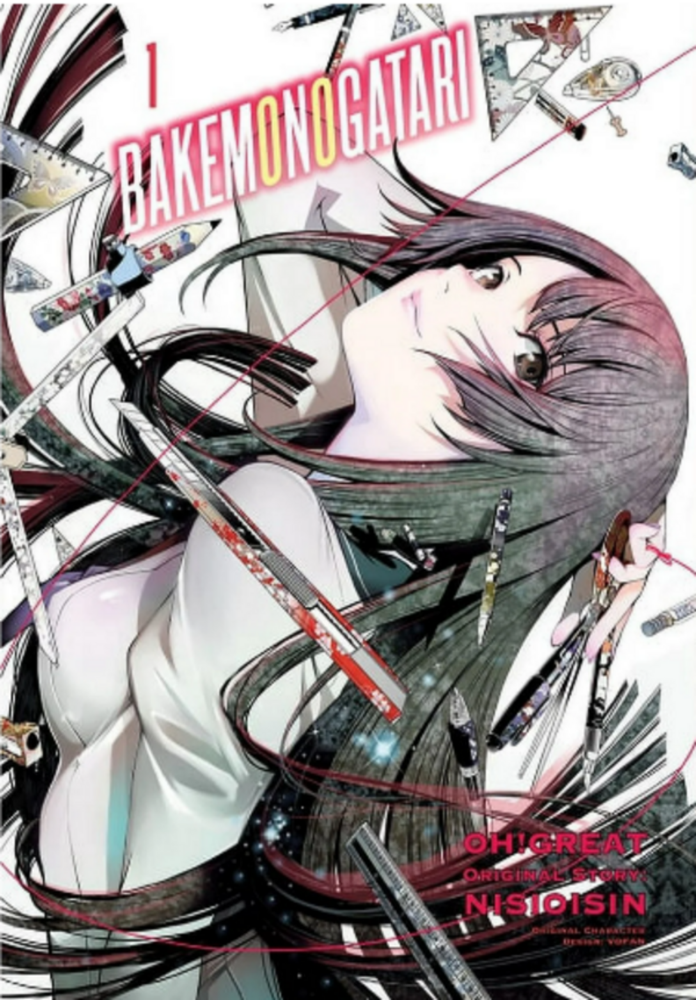
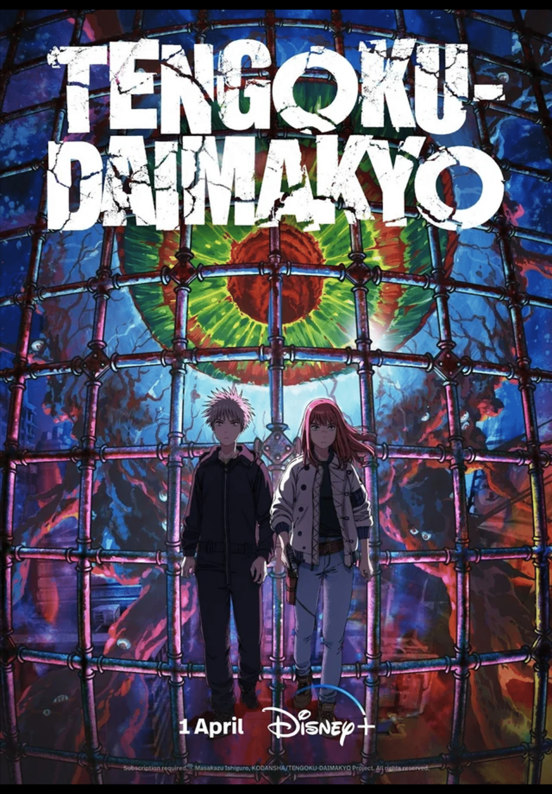
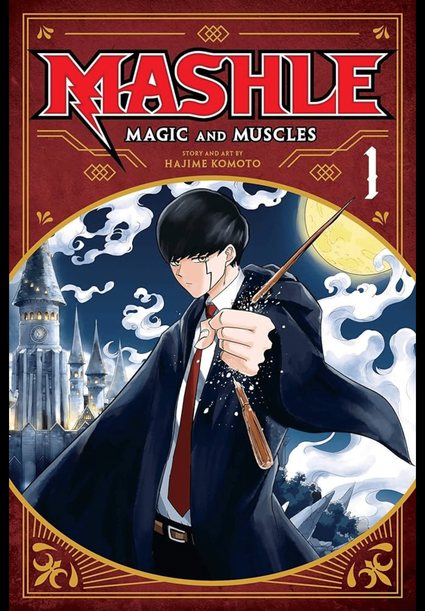

This manga contains mature content suitable for audiences aged 18 and above. However, it stands out as one of the best due to its exceptional
artwork and a narrative that amalgamates various elements from across the world into a single compelling story. Given its unique qualities,
I'm inclined to prioritize completing this manga over others. Click on the image to view more.
Another list of favorite manga:



